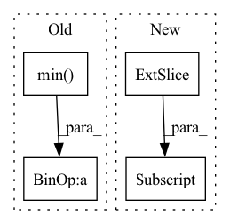

Pattern ID :27868
Before Change
data_params.y_scale = np.std(df["y"].values) if normalize_y else 1.0
else:
// currently never called
data_params.t_start = np.min( df["ds"].iloc[:split_idx])
data_params.t_scale = np.max(df["ds"].iloc[:split_idx]) - data_params.t_start
if "y" in df:
data_params.y_shift = np.mean(df["y"].iloc[:split_idx].values) if normalize_y else 0.0
data_params.y_scale = np.std(df["y"].iloc[:split_idx].values) if normalize_y else 1.0After Change
if df["ds"].dtype == np.int64:
df.loc[:, "ds"] = df.loc[:, "ds"] .astype(str)
df.loc[:, "ds"] = pd.to_datetime(df.loc[:, "ds"])
data_params = AttrDict({})In pattern: SUPERPATTERN
Frequency: 3
Non-data size: 4
Instances Fragment ID: 82797836
Project Name: ourownstory/neural_prophet
Commit Name: 1192f2f451030b40c2b8561aa0ffd602479e2852
Time: 2020-06-05
Author: oskar.triebe@merantix.com
File Name: neuralprophet/df_utils.py
M Class Name: AnonimousClass
N Class Name: AnonimousClass
M Method Name: init_data_params(4)
N Method Name: init_data_params(4)
M Parent Class:
N Parent Class:
M File Name: neuralprophet/df_utils.py
N File Name: neuralprophet/df_utils.py
M Start Line: 18
M End Line: 37
N Start Line: 20
N End Line: 44
Before Change
saliency_map = torch.sigmoid(torch.mean(feature_map, dim=1))
saliency_map = (
255
* (saliency_map - torch.min( saliency_map) )
/ (torch.max(saliency_map) - torch.min(saliency_map) + 1e-12)
)
saliency_map = saliency_map.to(torch.uint8)After Change
min_values, _ = torch.min(saliency_map, -1)
saliency_map = (
255
* (saliency_map - min_values[:, None] )
/ (max_values - min_values + 1e-12)[:, None]
)
saliency_map = saliency_map.reshape((bs, h, w)) Fragment ID: 82797835
Project Name: openvinotoolkit/model_preparation_algorithm
Commit Name: e2c8010f30007ae6429e629b2c2a5b2c13815d07
Time: 2022-07-21
Author: eugene.liu@intel.com
File Name: mpa/modules/hooks/auxiliary_hooks.py
M Class Name: SaliencyMapHook
N Class Name: SaliencyMapHook
M Method Name: func(1)
N Method Name: func(1)
M Parent Class:
N Parent Class:
M File Name: mpa/modules/hooks/auxiliary_hooks.py
N File Name: mpa/modules/hooks/auxiliary_hooks.py
M Start Line: 87
M End Line: 92
N Start Line: 87
N End Line: 97
Before Change
signal_tensor = pt_gaussian(signal_tensor.unsqueeze(0).unsqueeze(0))
signal_tensor = signal_tensor.squeeze(0).squeeze(0)
signal[0] = signal_tensor.detach().cpu().numpy()
signal[0] = (signal[0] - np.min( signal[0]) ) / (np.max(signal[0]) - np.min(signal[0]))
d["signal"] = signal
else:After Change
list(d["centroids"][d["current_idx"]].values())[0][-2],
list(d["centroids"][d["current_idx"]].values())[0][-1],
)
signal[:, X, Y, Z] = 1.0
signal = GaussianSmooth(self.sigma)(signal)
Fragment ID: 82797826
Project Name: project-monai/monailabel
Commit Name: f45854cefd4034e2f4740c50a834443df48dfc65
Time: 2022-08-06
Author: diazandr3s@gmail.com
File Name: sample-apps/radiology/lib/transforms/transforms.py
M Class Name: GaussianSmoothedCentroidd
N Class Name: GaussianSmoothedCentroidd
M Method Name: __call__(2)
N Method Name: __call__(2)
M Parent Class: MapTransform
N Parent Class: MapTransform
M File Name: sample-apps/radiology/lib/transforms/transforms.py
N File Name: sample-apps/radiology/lib/transforms/transforms.py
M Start Line: 157
M End Line: 182
N Start Line: 181
N End Line: 206